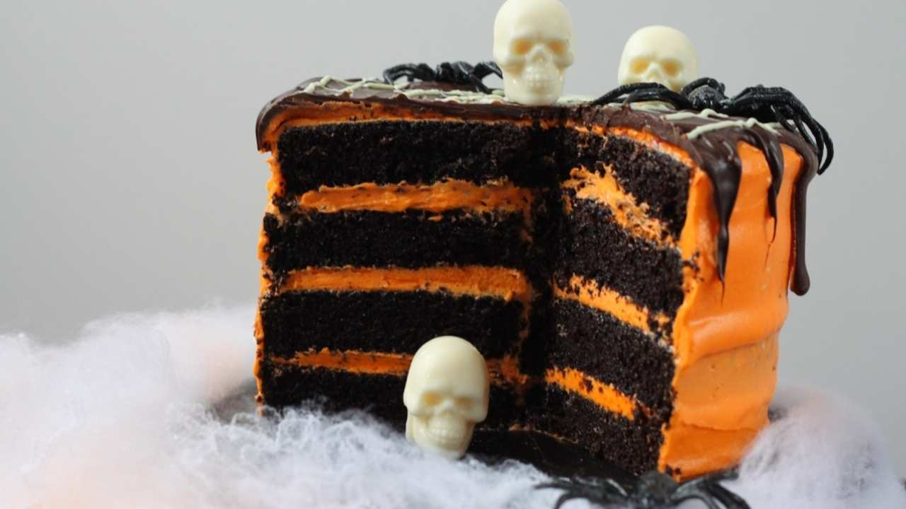

Back to home

Black Velvet Cake
Ingredients
For the black velvet cake:
- 240ml oil
- 600g caster sugar
- 4 large eggs
- 70g cocoa powder
- Black food colour (use gel food colour if you can - it provides a darker colour)
- 640g plain flour
- 480ml buttermilk
- 2 tbsp white vinegar
- 2 tsp bicarbonate of soda
- 2 tbsp instant coffee dissolved in 50ml hot water
- 100g grated dark chocolate
For the frosting:
- 500g unsalted butter
- 500g full-fat cream cheese
- 2 tsp vanilla extract
- 600g icing sugar
- Orange food colour (use gel food colour)
- 200g melted dark chocolate, to drizzle
- 50g melted white chocolate, for the web
- White chocolate skulls and jelly spiders, to decorate (or any other creepy sweets you like)
Method
- Pre-heat the oven to 160°C. Grease and line two round 8-inch cake tins.
- To make the cake, beat together the eggs and sugar until light and fluffy. Next add the oil, buttermilk, vinegar, and black food colour. Mix together the grated chocolate and espresso and then pour into the mixer. Whisk to combine.
- Sift in the flour, cocoa powder and bicarbonate of soda and whisk until smooth.
- Pour the batter into the tins and bake for 60 minutes or until a skewer inserted into the cake comes out clean.
- Remove from the oven and allow the cakes to cool in the tin for 10 minutes. Run a knife around the edges of cakes to loosen them and invert onto a wire rack. Tip: a piece of bread on top of your cakes will keep them moist as they cool.
- Once cooled completely, trim the cakes if the tops are domed and cut each cake in half so you have four sponges.
- In a mixer, whip the butter until pale and fluffy. Add the cream cheese and whip again. Add the icing sugar and beat on a high speed until really pale. Next, add the vanilla extract and orange food colour.
- To assemble the cake, layer up the sponges with icing and cover the entire cake too.
- Place the cake in the fridge for at least 30 minutes.
- Pour over the cooled melted dark chocolate and allow it to drizzle down the sides of the cake - the messier the better.
- Place the melted white chocolate in a squeezy bottle and swirl a spiral on top of the dark chocolate. Use a cocktail stick to make a web pattern by dragging the white chocolate through the dark.
- Decorate with any creepy treats you like. We used white chocolate skulls (used by setting melted chocolate in a skull mould) and jelly spiders.
Back to home